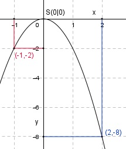

Aufgabe 4 y = -2x2 Wertetabelle: x -2 -1 0 1 2 y -8 -2 0 -2 -8 Es ist eine nach unten geöffnete (Zahl vor dem x² ist negativ), im Vergleich zur Normalparabel gestreckte Parabel (Zahl vor dem x² ist dem Betrag nach größer als 1). Sie ist symmetrisch zur y-Achse und hat ihren Scheitelpunkt, den höchsten Punkt, bei S(0|0). > 